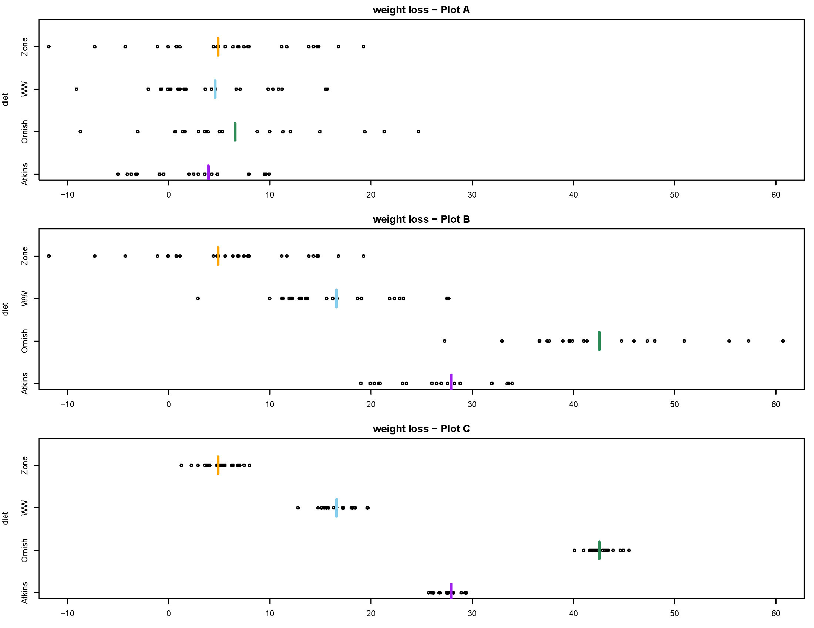
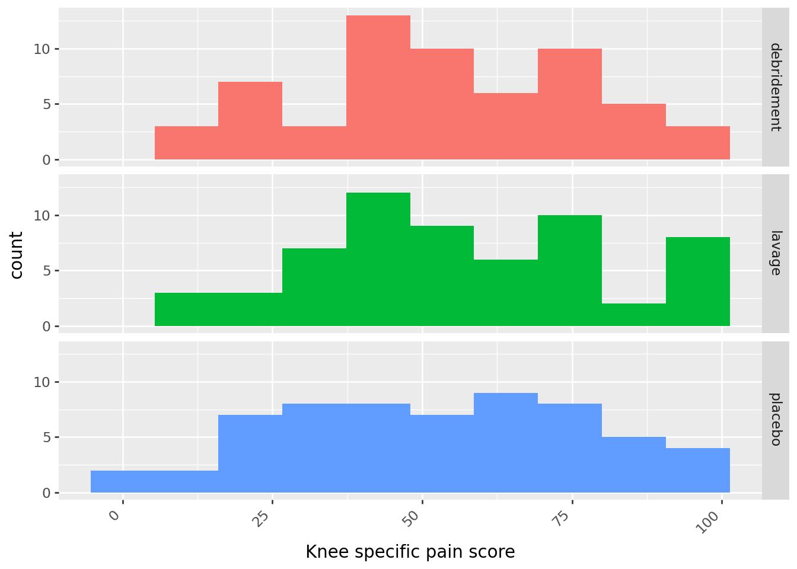
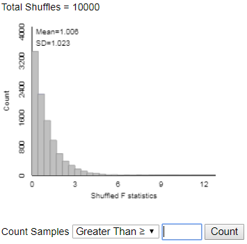
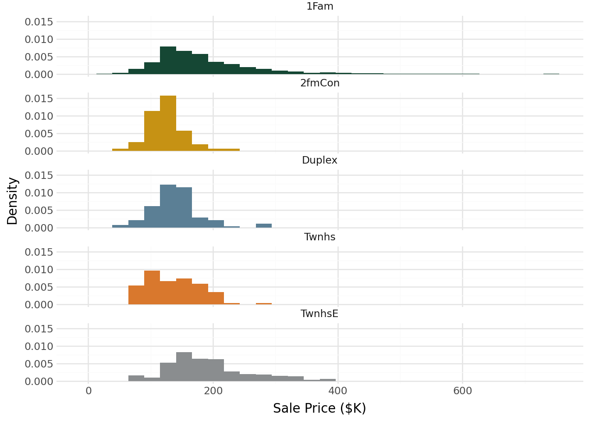
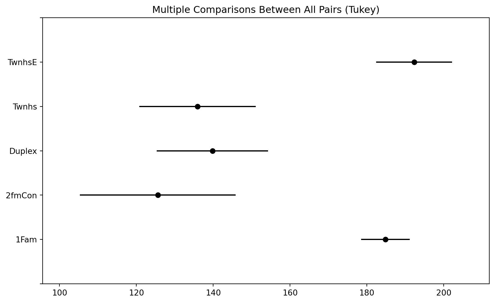
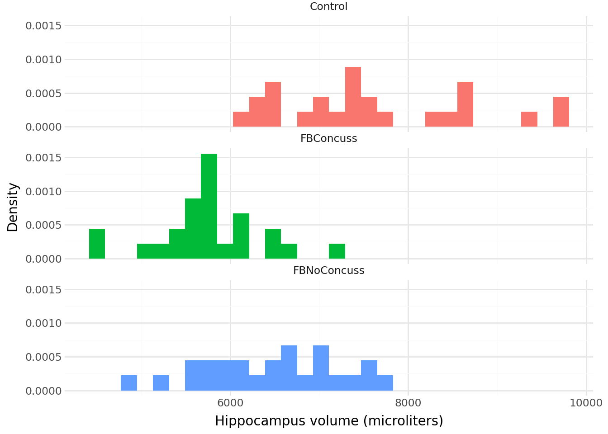

| count | mean | std | min | 25% | 50% | 75% | max | |
|---|---|---|---|---|---|---|---|---|
| treatment | ||||||||
| debridement | 60.0 | 53.983333 | 23.304536 | 10.0 | 40.75 | 52.0 | 76.25 | 97.0 |
| lavage | 60.0 | 56.733333 | 24.150564 | 8.0 | 41.00 | 53.5 | 73.50 | 99.0 |
| placebo | 60.0 | 52.450000 | 25.079146 | 3.0 | 31.00 | 54.0 | 70.25 | 97.0 |
29 Comparing multiple means: ANOVA \(F\) procedures
When dealing with a numerical variable, we often summarize the variable with its mean. We have seen how to perform inference for a single mean and for comparing two means. Now we will see how to compare multiple means. The process is called “analysis of variance” or ANOVA, but that name is a little misleading. Our conclusions will still be about means.
Example 29.1 Consider the following plots, which are all on the same scale. (This example just illustrates some general ideas so the context isn’t important, but the data relate to a study on different types of diet plans (Atkins, etc) and weight loss. Plot A displays the study data. Plots B and C show hypothetical data sets with the same group sizes as in Plot A.) Group means are indicated by the colored vertical lines.
- The SD for each group in Plot B equals the SD for the corresponding group in Plot A.
- The mean for each group in Plot C equals the mean for the corresponding group in Plot B.

Rank the three scenarios (A, B, C) in order from weakest to strongest evidence to reject the null hypothesis of no difference in means between groups. That is, rank the plots in order from largest to smallest p-value.
Compare plots A and B.
- The variability between groups in Plot B is (choose one: >, <, =) the variability between groups in Plot A.
- The variability within groups in Plot B is (choose one: >, <, =) the variability within groups in Plot A.
Compare plots B and C.
- The variability between groups in Plot C is (choose one: >, <, =) the variability between groups in Plot B.
- The variability within groups in Plot C is (choose one: >, <, =) the variability within groups in Plot B.
Rank the plots in order from smallest to largest \(F\) statistic.
- Example 29.1 illustrates the idea behind the \(F\) statistic: we reject the null hypothesis of no difference in means between groups/populations/treatments if the observed variability between groups is large relative to the observed variability within groups.
- Roughly, we reject the null hypothesis if the ratio \[ \frac{\text{variability between groups}}{\text{variability within groups}} \] is large enough. This idea is known as analysis of variance (ANOVA).
- The name ANOVA refers to what we are doing, and not why we are doing it.
- Remember, we are analyzing the variance to make a conclusion about the means
- The \(F\) statistic quantifies the above ratio. The larger the value of the \(F\) statistic the stronger the evidence to reject the null hypothesis (of no difference) in favor of the alternative hypothesis (of some difference). That is, the largest the \(F\) statistic the smaller the p-value.
Example 29.2 When medical therapy fails to relieve the pain of osteoarthritis of the knee, arthroscopic lavage or debridement is often recommended. More than 650,000 such procedures are performed each year at a cost of roughly $5,000 each. A recent double blind experiment investigated the effectiveness of these procedures1. 180 subjects with osteoarthritis of the knee were randomly assigned to receive one of three treatments: arthroscopic lavage (which involved flushing the knee joint with fluid), arthroscopic debridement (which involved both lavage and shaving of cartilage and removal of debris), and placebo surgery (which involved incisions in the knee, but no insertion of instruments). Various outcomes were measured; the summaries below summarize scores two years after the procedure on a knee-specific pain scale (0-100, with with higher scores indicating more severe pain). Does any procedure tend to result in better pain scores on average?
The following summarizes the sample data. Note that the sample size is the same within each group, which somewhat simplifies the computation of the ANOVA \(F\) statistic.

What statistic can be used to measure the variability within the Debridement group? Lavage? Placebo? How could you combine these numbers to to measure, in a single number, variability within groups?
If the null hypothesis is true, what would you expect about the group means?
What statistic can be used to measure the observed variability between groups?
Regardless of whether or not the null hypothesis is true, which of the values from parts 1 nand 3 would you expect to be larger? Why?
How could use measure the expected variability between groups if the null hypothesis is true?
Compute the \(F\) statistic as the value from part 3 divided by the value from part 5.
What value would you expect \(F\) to be if the null hypothesis is true?
Specify in detail how you could use simulation to approximate the null distribution of the \(F\) statistic.
Figure 29.1 displays results from an applet used to run 10000 repetitions of the simulation. How could you use the simulation results to approximate the p-value? Could you use the empirical rule for Normal distributions?

Figure 29.1: Permutation null distribution of \(F\) statistic for Example 29.2. The p-value is about 0.6. State a conclusion in context. Are the results “significant”?
Hypothesis test for comparing multiple means: “One-way ANOVA \(F\) test”
- Situation: \(N\) observations of numerical response variable; categorical explanatory variable with \(g\) groups
- Parameters: \(\mu_j\)’s are the population/process/treatment response means; \(\sigma\) is the common group SD of responses
- Goal: test for any differences in means
- The null hypothesis is \(H_0: \mu_1=\cdots=\mu_g\) (“no difference” or “no treatment effect”)
- The alternative hypothesis is not \(H_0\); that is, there is some difference in means between groups, \(H_1: \mu_j\neq \mu_k \text{ for some } j\neq k\)
- Test statistic: one-way ANOVA \(F\) statistic \[ F = \frac{\sum_{j=1}^g n_j\left(\bar{x}_j - \bar{x}\right)^2/(g-1)}{\sum_{j=1}^g (n_j-1)s^2_j/(N-g)} \]
- The p-value is the probability of observing a value at least as large as the observed \(F\) based on an \(F\) distribution with \(g-1\) degrees of freedom in the numerator and \(N-g\) degrees of freedom in the denominator
- Assumptions:
- Either:
- The data are obtained through multiple unbiased and independent random samples from large populations
- Or from one unbiased random sample which can be classified into multiple groups, and the groups can be considered independent of each other.
- The data are obtained from an experiment in which subjects were to two treatments.
- The data are obtained through multiple unbiased and independent random samples from large populations
- No bias in data collection
- Comparing means is an appropriate analysis
- Equal variance: True SD of responses is same, \(\sigma\), for each population/process/treatment.
- Typically satisfied through random assignment.
- Might not be satisfied if the data are sampled from different populations/processes.
- One rule of thumb is that the largest observed sample SD should be no more than twice the smallest.
- Either:
- Special case: when the group size \(n\) is the same for all \(g\) groups is \[\begin{align*} F & = \frac{\text{group size} \times \text{variance of group means}}{\text{mean of group variances}}\\ & = \frac{n\sum_{j=1}^g \left(\bar{x}_j-\bar{x}\right)^2/(g-1)}{\sum_{j=1}^g s_j^2/g } \end{align*}\]
- The calculations are traditionally summarized in an ANOVA table
| Source | df | SS (Sum of squares) | MS (Mean Square) | \(F\) |
|---|---|---|---|---|
| Between groups (a.k.a. “treament”) | \(g-1\) | SS(between) = \(\sum_{j=1}^g n_j\left(\bar{x}_j - \bar{x}\right)^2\) | \(\frac{\text{SS(between)}}{g-1}\) | \(\frac{\text{MS(between)}}{\text{MS(within)}}\) |
| Within groups (a.k.a. “error”) | \(N-g\) | SS(within) = \(\sum_{j=1}^g (n_j-1)s^2_j\) | \(\frac{\text{SS(within)}}{N-g}\) | |
| Total | \(N-1\) | (SS(between) + SS(within)) = \(\sum_{i=1}^N\left(x_{i} - \bar{x}\right)^2\) |
Example 29.3 Continuing with the Ames housing data set. Now suppose we want to compare sale price of homes by building type: single-family (1Fam), two-family (2fmCon), duplex, townhouse end unit (TwnhsE), townhouse inside unit (Twnhs). The following summarizes the sample data.
| count | mean | std | min | 25% | 50% | 75% | max | |
|---|---|---|---|---|---|---|---|---|
| BldgType | ||||||||
| 1Fam | 2425.0 | 184.812041 | 82.821802 | 12.789 | 130.0000 | 165.000 | 220.000 | 755.00 |
| 2fmCon | 62.0 | 125.581710 | 31.089240 | 55.000 | 106.5625 | 122.250 | 140.000 | 228.95 |
| Duplex | 109.0 | 139.808936 | 39.498974 | 61.500 | 118.8580 | 136.905 | 153.337 | 269.50 |
| Twnhs | 101.0 | 135.934059 | 41.938931 | 73.000 | 100.5000 | 130.000 | 170.000 | 280.75 |
| TwnhsE | 233.0 | 192.311914 | 66.191738 | 71.000 | 145.0000 | 180.000 | 222.000 | 392.50 |

- Table 29.1 is the ANOVA table. The \(F\) statistic is 26.1 and the p-value is basically 0. State the conclusion of the ANOVA \(F\) test in context.
- What are some natural follow-up questions? How might you use the data to answer them?
sum_sq df F PR(>F)
C(BldgType) 6.454111e+05 4.0 26.151358 2.475923e-21
Residual 1.804713e+07 2925.0 NaN NaN- Rejecting the null hypothesis based on an \(F\) statistic only tells you that “the mean for at least one of the treatments (populations) is not the same as the mean for at least one of the other treatments (populations)”.
- The natural follow-up questions are: which treatment (population) means differ? and by how much?
- One approach when you have rejected the null hypothesis is to calculate — using software — all pairwise confidence intervals. In particular, which intervals do not contain zero?
- When computing multiple confidence intervals, the multiple (\(z^*\) or \(t^*\)) should be increased2 to account for the issue of multiple comparisons (recall Exercise 26.2 and related notes).
- Tukey’s method is a widely used method for constructing simultaneous confidence intervals for all pairwise comparisons of means. The confidence intervals computed using Tukey’s method already contain an adjustment to account for multiple comparisons.
Example 29.4 Continuing Example 29.3. Table 29.2 contains the results of Tukey pairwise 95% confidence intervals.
For which pairs of building types is there reasonable evidence of a difference in mean sale price? For which pairs is there NOT reasonable evidence of a difference?
Interpret in context each of the confidence intervals that does NOT contain 0.
Multiple Comparison of Means - Tukey HSD, FWER=0.05
======================================================
group1 group2 meandiff p-adj lower upper reject
------------------------------------------------------
1Fam 2fmCon -59.2303 0.0 -86.8048 -31.6559 True
1Fam Duplex -45.0031 0.0 -65.9952 -24.0111 True
1Fam Twnhs -48.878 0.0 -70.6511 -27.1049 True
1Fam TwnhsE 7.4999 0.6328 -7.2051 22.2048 False
2fmCon Duplex 14.2272 0.786 -19.8771 48.3316 False
2fmCon Twnhs 10.3523 0.9255 -24.2382 44.9429 False
2fmCon TwnhsE 66.7302 0.0 36.0924 97.368 True
Duplex Twnhs -3.8749 0.9965 -33.4861 25.7363 False
Duplex TwnhsE 52.503 0.0 27.6234 77.3825 True
Twnhs TwnhsE 56.3779 0.0 30.8358 81.9199 True
------------------------------------------------------

29.1 Exercises
Exercise 29.1 Continuing Example 29.2. If we were to compute a series of pairwise confidence intervals for the difference in group means — Debridement \(-\) Lavage, Debridement \(-\) Placebo, Lavage \(-\) Placebo — what value would each of the confidence intervals contain? Why?
Exercise 29.2 A study3 on brain trauma in football players included 3 groups, with 25 cases in each group. The control group consisted of healthy individuals with no history of brain trauma who were comparable to the other groups in age, sex, and education. The second group consisted of NCAA Division 1 college football players with no history of concussion, while the third group consisted of NCAA Division 1 college football players with a history of concussion. High resolution MRI was used to collect brain hippocampus volume (microliters).
Plots and summary statistics of hippocampus volume (microliters) for all three groups
| count | mean | std | min | 25% | 50% | 75% | max | |
|---|---|---|---|---|---|---|---|---|
| Group | ||||||||
| Control | 25.0 | 7602.6 | 1074.022928 | 6175.0 | 6780.0 | 7385.0 | 8510.0 | 9710.0 |
| FBConcuss | 25.0 | 5734.6 | 593.397562 | 4490.0 | 5505.0 | 5710.0 | 6035.0 | 7160.0 |
| FBNoConcuss | 25.0 | 6459.2 | 779.739112 | 4810.0 | 5965.0 | 6515.0 | 7020.0 | 7790.0 |

- Specify in words the null hypothesis.
- The SD of the numbers 7602.6, 6459.2, and 5734.6 is 941.8. Compute by hand the ANOVA \(F\) statistic.
- The ANOVA \(F\) statistic is 31.5. Describe in full detail how (in principle) you could use index cards to simulate the null distribution of the ANOVA \(F\) statistic and how you would use the simulation results to find the p-value. (You don’t have to compute the p-value; just explain how you could find it after you performed the simulation.)
- Use this applet to conduct the simulation from the previous part.
- You will first need to copy and paste the data from this study into the applet.
- In the Select Statistic box in the lower left, select F-statistic. Check that the Observed F-statistic is 31.473, and that your summary statistics match those from the summaries.
- Click the “Show Shuffle Options” box and then run the simulation.
- Enter the appropriate value in the “Count Samples” box and click “Count” to compute the p-value.
- The p-value is basically 0 (see Table 29.3). Write a clearly worded sentence containing the conclusion of the hypothesis test in the context of the problem.
- Table 29.4 contains the Tukey confidence intervals. Which of the confidence intervals contain 0, and which do not? Explain what this means.
- Write a clearly worded sentence interpreting each of the three confidence intervals in context.
sum_sq df F PR(>F)
C(Group) 44348606.0 2.0 31.473165 1.507201e-10
Residual 50727336.0 72.0 NaN NaN Multiple Comparison of Means - Tukey HSD, FWER=0.05
==================================================================
group1 group2 meandiff p-adj lower upper reject
------------------------------------------------------------------
Control FBConcuss -1868.0 0.0 -2436.1525 -1299.8475 True
Control FBNoConcuss -1143.4 0.0 -1711.5525 -575.2475 True
FBConcuss FBNoConcuss 724.6 0.0088 156.4475 1292.7525 True
------------------------------------------------------------------There are several ways to do this. The simplest is a Bonferroni adjustment, which splits the error rate evenly across all intervals. For example, for simultaneous 95% confidence in 10 intervals (i.e. a total error rate of 0.05), use the \(t^*\) factor for 99.5% confidence (\(0.995 = 1-0.05/10\)), \(t^*= 2.8\), instead of 2 when computing the intervals. But the Tukey method is more widely used when comparing means.↩︎
Source: Singh R, Meier T, Kuplicki R, Savitz J, et al., “Relationship of Collegiate Football Experience and Concussion With Hippocampal Volume and Cognitive Outcome,” JAMA, 311(18), 2014.↩︎